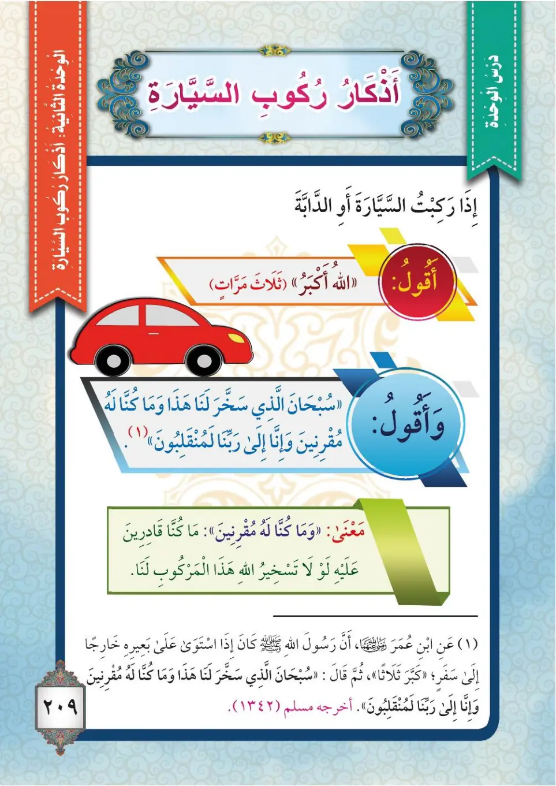

Stage 3·المرحلة الثالثة💬 Unit 1
أَذْكَارُ رُكُوبِ الدَّابَّةِ The Adhkar of Riding a Vehicle
From the Textbookp. 210

كَانَ النَّبِيُّ ﷺ إِذَا رَكِبَ الدَّابَّةَ أَوِ السَّيَّارَةَ يُسَبِّحُ اللهَ وَيَحْمَدُهُ، وَأَمَرَنَا أَنْ نَفْعَلَ مِثْلَ ذَلِكَ عِنْدَ رُكُوبِ الْمَرْكُوبِ؛ شُكْرًا لِلَّهِ تَعَالَى عَلَى تَسْخِيرِهِ لَنَا.
Kana an-nabiyyu ﷺ idha rakiba ad-dabbata aw as-sayyarata yusabbihu Allaha wa yahmaduh, wa amarana an naf'ala mithla dhalika 'inda rukubi al-markub; shukran lillahi ta'ala 'ala taskhirihi lana.
When the Prophet ﷺ rode an animal or a vehicle he would glorify Allah and praise Him, and he commanded us to do the same when we ride, as thanks to Allah the Exalted for subjecting it to us.
நபி ﷺ வாகனம் அல்லது விலங்கை ஏறும்போது அல்லாஹ்வைத் தஸ்பீஹ் செய்து துதிப்பார்கள்; அதை நமக்குக் கீழ்ப்படுத்தியதற்காக அல்லாஹ்வுக்கு நன்றி செலுத்தும் வகையில் நாமும் அவ்வாறே செய்யுமாறு கட்டளையிட்டார்கள்.
عَنْ عَبْدِ اللهِ بْنِ عُمَرَ رَضِيَ اللهُ عَنْهُمَا قَالَ: كَانَ رَسُولُ اللهِ ﷺ إِذَا اسْتَوَى عَلَى بَعِيرِهِ خَارِجًا إِلَى سَفَرٍ كَبَّرَ ثَلَاثًا، ثُمَّ قَالَ: «سُبْحَانَ الَّذِي سَخَّرَ لَنَا هَذَا وَمَا كُنَّا لَهُ مُقْرِنِينَ، وَإِنَّا إِلَى رَبِّنَا لَمُنْقَلِبُونَ». أَخْرَجَهُ مُسْلِمٌ.
'An 'Abdillahi ibni 'Umara radiyallahu 'anhuma qal: kana rasulullahi ﷺ idha istawa 'ala ba'irihi kharijan ila safarin kabbara thalathan, thumma qal: «Subhana alladhi sakhkhara lana hadha wa ma kunna lahu muqrinin, wa inna ila rabbina lamunqalibun». Akhrajahu Muslim.
'Abdullah ibn 'Umar, may Allah be pleased with them, said: When the Messenger of Allah ﷺ mounted his camel to set out on a journey he said "Allahu Akbar" three times, then said: "Glory be to Him who has subjected this to us, though we were not able to subdue it, and to our Lord we shall surely return." Narrated by Muslim.
அப்துல்லாஹ் இப்னு உமர் (ரலி) கூறினார்கள்: "ஒரு பயணத்திற்காக ஒட்டகத்தில் ஏறும்போது நபி ﷺ மூன்றுமுறை அல்லாஹு அக்பர் கூறி, பிறகு 'எங்களுக்கு இதை கீழ்ப்படுத்திய இறைவன் தூய்மையானவன்; நாங்கள் அதற்கு இணையற்றவர்களாக இருந்தோம்; நிச்சயமாக நாங்கள் எங்கள் இறைவனிடமே மீள்வோம்' என்று கூறினார்கள்" (முஸ்லிம்)
مَعْنَى الْكَلَامِ: «وَمَا كُنَّا لَهُ مُقْرِنِينَ»: وَمَا كُنَّا قَادِرِينَ عَلَى تَسْخِيرِهِ لَوْلَا أَنَّ اللهَ سَخَّرَهُ لَنَا، فَيَقُولُ الْمُسَافِرُ مَا قَالَهُ النَّبِيُّ ﷺ عِنْدَ رُكُوبِ الْمَرْكُوبِ؛ لِيَشْكُرَ اللهَ تَعَالَى عَلَى نِعْمَةِ التَّسْخِيرِ.
Ma'na al-kalami: «Wa ma kunna lahu muqrinin»: wa ma kunna qadirina 'ala taskhirihi lawla anna Allaha sakhkharahu lana, fayaqulu al-musafiru ma qalahu an-nabiyyu ﷺ 'inda rukubi al-markub; liyashkura Allaha ta'ala 'ala ni'mati at-taskhir.
The meaning of the words:
"And we were not able to subdue it": we were not able to subject it, had Allah not subjected it to us. So the traveller says what the Prophet ﷺ said when riding a vehicle, to thank Allah the Exalted for the blessing of it being subjected to him.
சொற்களின் பொருள்:
'அதற்கு நாங்கள் இணையற்றவர்களாக இருந்தோம்': அல்லாஹ் அதை நமக்கு கீழ்ப்படுத்தாவிட்டால் அதை நாங்கள் வசப்படுத்த முடியாது. எனவே பயணி வாகனம் ஏறும்போது நபி ﷺ கூறியதைக் கூறி, கட்டுப்படுத்துதல் என்னும் அருட்கொடைக்காக இறைவனுக்கு நன்றி செலுத்த வேண்டும்.